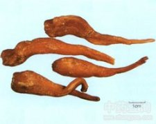

峨参

拼音
é Shēn
别名
土田七[四川]
来源
伞形科峨参属植物峨参Anthriscus sylvestris （L.） Hoffm.，以根、叶入药。8～9月地上部分变黄时挖根，洗净煮熟，去外皮晒干或烘干；叶鲜用或晒干研粉。
生境分布
生于中山区的阴处或半阴处。分布江苏、浙江、四川等地。
药材特点
多年生草本，高60～80厘米。直根粗大。茎圆柱形，中空。叶互生，长10～30厘米，2回3出式羽状分裂或2回羽状分裂；裂片披针状卵形，长1.5～3.5厘米，宽5～15毫米，边缘羽状缺裂或齿裂，下面疏生柔毛；叶柄长5～20厘米。复伞形花序，顶生或腋生；无总苞，小总苞片5～8，卵形或披针形，全缘，有毛；花杂性，雄花较多；萼齿不显；花瓣5，白色，先端钝或突尖。双悬果条状管形，先端渐狭，在中缝处收缩，内侧有显着的槽，顶端有2个宿存柱头。花期4～5月。
性状
干燥根呈条形或圆锥形，长3～7厘米，中部粗1～2厘米。顶端有茎痕，侧面偶有锥形小突起：尾端渐细小。表面黄棕色或灰棕色，有明显的粗环纹 质坚实沉重，断面黄色或黄棕色，肉质细致。气微，味微辛辣带甘。以质坚实、色白黄、根条粗及环纹细致者为佳。
性味
甘、辛、微苦，微温。
功能主治
补中益气，祛瘀生新。根：用于跌打损伤，腰痛，肺虚咳嗽，咳嗽咯血，脾虚腹胀，四肢无力，老人尿频，水肿；叶：外用治创伤。
用法用量
根4～5钱；叶外用适量，鲜叶捣烂或干叶研粉敷患处。
化学成分
根含峨参内酯即脱氧鬼臼毒素、异峨参内酯以及还原糖、蔗糖，淀粉等。花含黄酮甙，为木犀草素在C7上的糖甙。
药理作用
1：无药理作用数据
摘录
《全国中草药汇编》